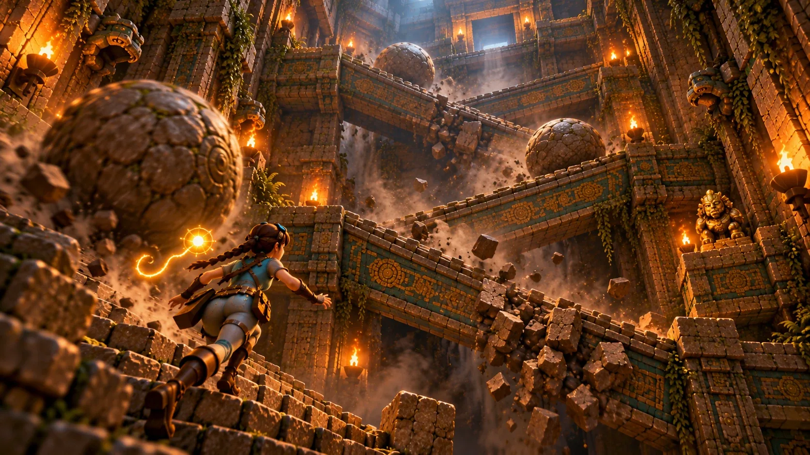

Nach dem ersten Ziel
Klassischer Modus
Keine Sonnentore, drei Leben, kein Überspringen. Game over heißt: das ganze Level von vorn.

Start / Spieltypen
Spieltyp · Fallen-Plattformer
Der verborgene Weg der Erbauer durch die Tempelwände nach unten, ein Fallenbildschirm nach dem anderen.
Ein Fallen-Plattformer in Seitenansicht im Inneren des Sonnentempels, ein Bildschirm nach dem anderen.
Die Erbauer benutzten nie die große Treppe: Sie hatten ihren eigenen Weg nach unten, versteckt in den Wänden, und jeden Zentimeter davon mit Fallen gesichert. Du hast den Spalt gefunden. K'in hat dich gefunden. Jeder Bildschirm ist ein Fallenrätsel: Speere aus der Decke, Pfeile, Stampfer, Pendel und ein Felsbrocken, der dich platt machen will. Eine Berührung, und du bist Staub. Lern den Bildschirm, schaff ihn beim nächsten Versuch und heb dir deine Leben für die Bildschirme auf, auf die es ankommt.

So wird gespielt
Eine feste Kamera zeigt jeweils einen Bildschirm und schneidet zum nächsten, sobald du den Rand überquerst. Jede Falle ist ganz zu sehen, bevor du dich festlegst, also fühlt sich der zweite Versuch klug an, nicht wie Glück.
Schätze und drei versteckte Große Idole locken gute Spieler vom sicheren Weg.
Die Ausrüstung
Stabstoß: löst Drähte und Drucksteine aus sicherer Entfernung aus und bringt Wächter ins Taumeln. Glutladungen: sprengen rissige Blöcke und betäuben Gegner, aber geh weg, wenn es zischt. Seile: rollen sich an Bronzeankern ab und führen zu geheimen Simsen.
Der Hauptweg braucht nie ein Seil oder eine Ladung. Sie sind für Schätze da, also sind sie Gier, nie eine Sackgasse.
Level 1
Vierzehn Bildschirme im Zickzack durch die Wand der Pyramide nach unten, dann ein Aufzug hinauf zur verborgenen Sonnentür. Vier Sonnentore sichern unterwegs deinen Fortschritt.
| Bildschirm | Was er lehrt |
|---|---|
| Der Spalt | Laufen, springen und den Stolperdraht anstupsen, bevor der Speer dich findet. |
| Pfeilhalle | Glutladungen, ein rissiger Boden mit Gold darunter und ein Druckstein, den du aus der Ferne anstupst. |
| Wächtergalerie | Der erste Erweckte Wächter und ein bröckelnder Steg über ihm. |
| Der versiegelte Boden | Lies das Wandbild und drück die Platten in seiner Reihenfolge: Schlange, Jaguar, Adler. |
| Fledermausschacht | Über versetzte Simse nach unten, zwischen zwei Höhlenfledermäusen. |
| Pendelhalle | Zwei Klingen, einen halben Schwung versetzt, und ein Seil hinauf zum ersten Großen Idol. |
| Feuerdüsen | Drei Düsen feuern als Welle, lauf direkt hinter ihr her. |
| Stampferkammer | Zwei Stampfer im Fünf-Sekunden-Takt und eine Wand, die sich aufzusprengen lohnt. |
| Der lange Fall | Große Sprünge einen hohen Schacht hinab, mit Pfeilen auf dem zweiten Sims. |
| Felsenflucht I | Eine Platte klickt, ein Felsbrocken fällt. Renn und spring in vollem Lauf über die Grube. |
| Felsenflucht II | Duck dich in die Nische und lass den Felsbrocken die Wand für dich einschlagen. |
| Speergang | Stachelleisten steigen als Welle, ein Seil führt zum dritten Großen Idol. |
| Kalenderaufzug | Ein schnellerer Wächter, dann ein Kalenderstein, der dich nach oben trägt. |
| Die Sonnentür | Eine bröckelnde Kette, auf der du nicht stehen bleiben darfst, und jemand, der an der Tür wartet. |
Fair beim zweiten Versuch
Wenn du einer Falle zum ersten Mal nahe kommst, fliegt K'in hin, leuchtet und sagt einen Satz. Nie zweimal.
Nach einem Tod leuchtet drei Sekunden lang, was dich erwischt hat, mit einem Hinweis.
Nach drei Toden auf einem Bildschirm bietet sie an, den Weg der Erbauer zu zeigen.
Nach sechs kann sie dich zum nächsten Bildschirm tragen, gegen Punkte.

Die Rivalin
Eine eingeritzte Notiz an der ersten Wand verrät, dass sie hier war. An der Sonnentür wartet Kayas goldenes Echo mit verschränkten Armen: „Du hast den Weg mit den Fallen genommen? Ich die Treppe.“
Später läuft ihr Echo das Level in Richtzeit, und sie zu schlagen heißt Gold.
Nach dem ersten Ziel
Keine Sonnentore, drei Leben, kein Überspringen. Game over heißt: das ganze Level von vorn.
Als Nächstes
Die ertrunkenen Zisternen, mit Wasser als Zeitgeber, und das wandernde Gewölbe, dessen Wände sich zwischen deinen Toden verschieben.
In die Reihe
Dieselben Fallen mit denselben Timings tauchen in Trap Galleries auf, und auf der Hauptinsel kann eine rissige Wand in einen Gang in Seitenansicht führen.